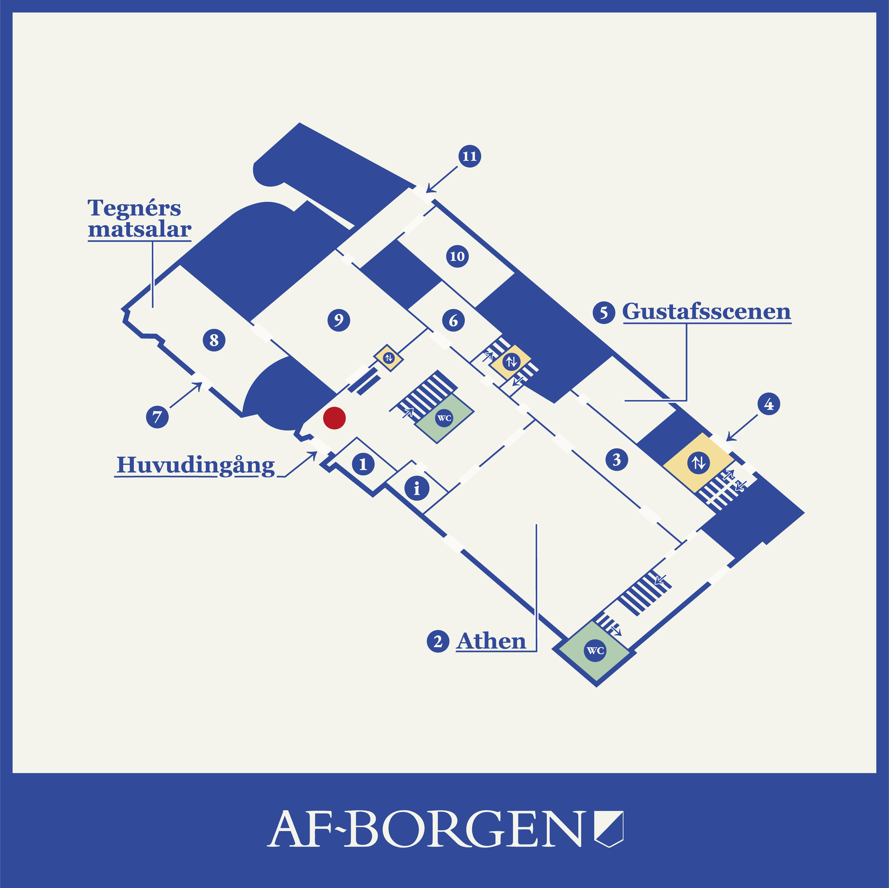
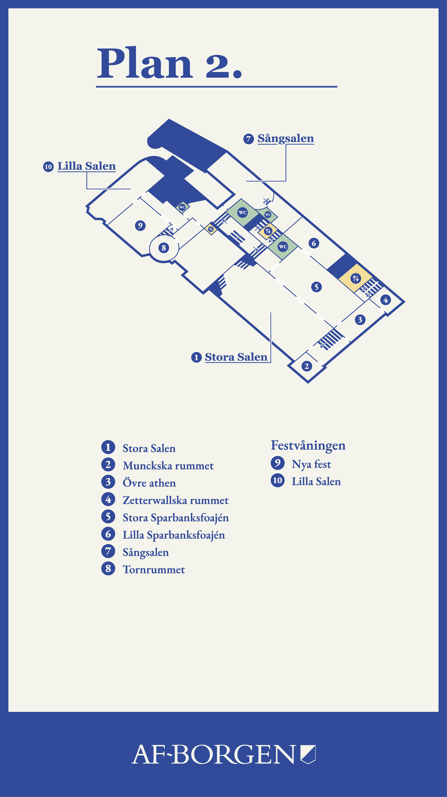
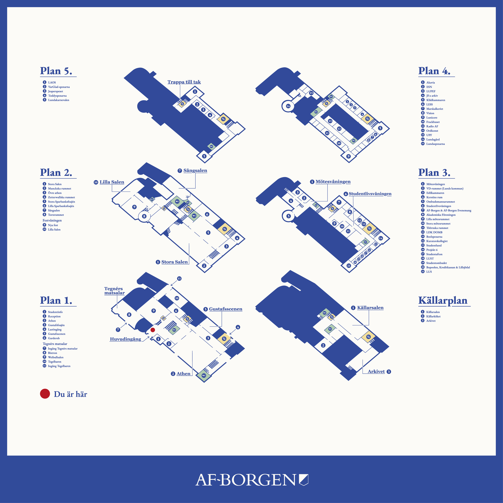

Grafisk design · AF-Borgen AB
Planlösning
Informationsmaterial för AF-Borgen, utformat för att ge besökare en tydlig överblick över husets lokaler och verksamheter.
Min roll
Grafisk design
Uppdragsgivare
AF-Borgen AB
År
2025
Om projektet
Jag tog fram den grafiska utformningen för en planlösning av AF-Borgen, med information om husets lokaler och verksamheter. Uppdraget var att skapa en tydlig och lättöverskådlig layout som fungerar för besökare i husets entré.
Materialet producerades i flera format, bland annat som en större banner för entrén samt mindre tryckformat Jag ansvarade för typografi, layout och informationsstruktur samt anpassning av designen för de olika formaten.


